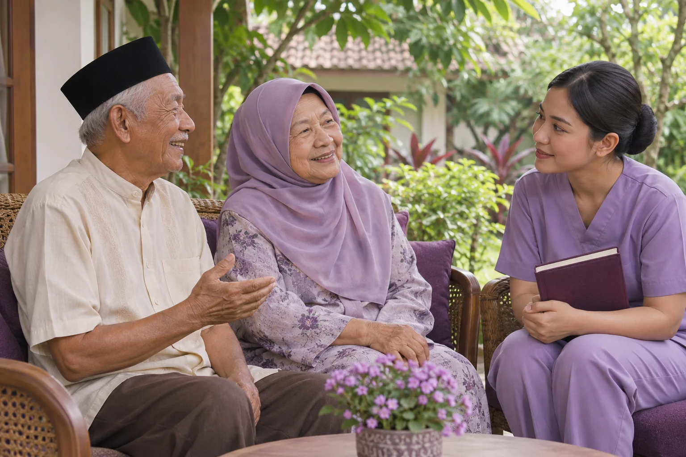

Lihat lansia secara utuh.
Identitas dan demografi, 17 instrumen, serta pengkajian head-to-toe dengan status pemeriksaan, temuan, dan catatan.
Jelajahi pengkajianPENDIDIKAN PROFESI NERS · GERONTIK
Dari pengkajian lansia hingga refleksi praktik. Satu ruang untuk mendokumentasikan asuhan, mempelajari prosedur, dan tumbuh bersama pembimbing.
Mahasiswa dan dosen menggunakan akun Google yang terdaftar.

Belajar melalui pengkajian, demonstrasi prosedur, dan refleksi bersama dosen.
Visual ilustrasi pembelajaran.
instrumen pengkajian lansia
portofolio praktik berkelanjutan
isian dan umpan balik terhubung
DARI DATA MENJADI PEMAHAMAN
Dokumentasikan proses belajar secara bertahap, lalu gunakan bukti yang sama untuk berdiskusi dengan pembimbing.
Identitas dan demografi, 17 instrumen, serta pengkajian head-to-toe dengan status pemeriksaan, temuan, dan catatan.
Jelajahi pengkajianAnalisis data, diagnosis, rencana, implementasi dan evaluasi dalam dokumentasi dua minggu. Buat laporan lengkap dan arsip PDF.
Buka ruang asuhanLogbook, bukti kompetensi, refleksi, kehadiran, dan tindak lanjut. Pengajuan mahasiswa ditinjau dosen sesuai penugasan.
Lihat portofolioPELAJARI. AMATI. LATIH.
Temukan panduan prosedur, demonstrasi pembelajaran dan akses latihan soal untuk mendukung belajar mandiri.
Telusuri materi SOP lansia dan dewasa di ruang belajar.
Akses video pembelajaran sebagai pendamping pemahaman prosedur.
Lanjutkan latihan soal di aplikasi UKOM. Akun dan hasil mengikuti layanan UKOM tersebut.
BELAJAR DENGAN PENDAMPINGAN
Identitas mahasiswa mengikuti daftar peserta resmi. Dosen membaca portofolio mahasiswa bimbingannya dan memberikan umpan balik.
UNTUK MAHASISWA
UNTUK DOSEN
ASKEP GERONTIK TERINTEGRASI
Universitas Bani Saleh · Pendidikan Profesi Ners
Gunakan akun Google yang terdaftar pada periode praktik Anda. Dashboard mengikuti peran resmi dari server.
Belum terdaftar? Hubungi super admin untuk verifikasi identitas dan penugasan.
← Kembali ke beranda